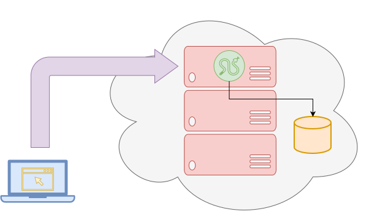

Logistics¶
- Exam 03
Databases: Overview¶
What is a database? How has used one before?
Most software systems, including web applications, usually store information in a database, which is an organized collection of data that can be easily accessed, managed, updated, and queried.
-
For simple data, it is sufficient to use a flat file to store data.
-
For structured data, it is possible to use CSV or JSON formatted files.
-
For large amounts of data, however, it is necessary to use a database management system (DBMS) such as SQLite.

Databases: doornote.py¶
Add a database to doornote.py, which is a web application that allows users to list the
messagesleft by others for a particularroomor allows users to post amessageto a particularroom.
# Start doornote web application
$ ./doornote.py 0.0.0.0 9999
# Get messages for Dillon 210
$ curl localhost:9999/room/dillon-210
# Post message to Dillon 210
$ curl -d 'Hello' localhost:9999/room/dillon-210
import json
import sys
from vial import Vial
# Constants
try:
HOST = sys.argv[1]
PORT = int(sys.argv[2])
except IndexError:
print(f'Usage: {sys.argv[0]} HOST PORT', file=sys.stderr)
sys.exit(1)
# Databases
...
# Globals
App = Vial(HOST, PORT, {'db': Database0()})
# Handlers
@App.route('/room/([a-z]+-[0-9]{3})')
def doornote_messages(request, room: str) -> str:
messages = App.db.messages(room)
return ''.join(f'{i:04d}. {m}\n' for i, m in enumerate(messages))
@App.route('/room/([a-z]+-[0-9]{3})', methods=['POST'])
def doornote_append(request, room: str) -> str:
App.db.append(room, request.post_data.decode())
return f'{room} now has {App.db.count(room)} messages.\n'
# Main Execution
if __name__ == '__main__':
App.run()
Databases: Version 0¶
Since we need to store messages for each room, we can create a dict where each room maps to a list of messages.
This is fast and simple but offers no persistence. If server crashes or exits, then all data is lost!
class Database0:
''' Database 0: Only stored in memory '''
def __init__(self):
self.rooms = {}
def messages(self, room: str) -> list[str]:
''' Return messages associated with room. '''
return self.rooms.get(room, [])
def append(self, room: str, message: str):
''' Add message to end of list associated with room. '''
try:
self.rooms[room].append(message)
except KeyError:
self.rooms[room] = [message]
def count(self, room: str) -> int:
''' Return number of messages for room. '''
return len(self.rooms.get(room, []))
Databases: Version 1¶
To add persistence, we can consider storing the
messages of each room in a separate file.
This is simple but is slow: need to open and perform
I/O for every operation. Moreover, with many rooms, we
would end up with a lot of files.
class Database1:
''' Database 1: Stored in multiple files (one per room) '''
def __init__(self, prefix='doornote'):
self.prefix = prefix
def messages(self, room: str) -> list[str]:
''' Return messages associated with room. '''
path = f'{self.prefix}.{room}'
try:
with open(path) as stream:
return [line.strip() for line in stream]
except OSError:
return []
def append(self, room: str, message: str):
''' Add message to end of list associated with room. '''
path = f'{self.prefix}.{room}'
with open(path, 'a') as stream:
stream.write(f'{message}\n')
def count(self, room: str) -> int:
''' Return number of messages for room. '''
path = f'{self.prefix}.{room}'
with open(path) as stream:
return sum(1 for _ in stream)
Databases: Version 2¶
Rather than use many files, we can use a single structured JSON file.
This is simple and a bit more efficient because we only need perform
I/O when initially loading the database and when saving after an append.
class Database2:
''' Database 2: Stored in a single JSON file '''
def __init__(self, path='doornote.json'):
self.path = path
self.load()
def load(self):
try:
with open(self.path) as stream:
self.rooms = json.load(stream)
except OSError:
self.rooms = {}
def save(self):
with open(self.path, 'w') as stream:
json.dump(self.rooms, stream)
def messages(self, room: str) -> list[str]:
''' Return messages associated with room. '''
return self.rooms.get(room, [])
def append(self, room: str, message: str):
''' Add message to end of list associated with room. '''
try:
self.rooms[room].append(message)
except KeyError:
self.rooms[room] = [message]
self.save()
def count(self, room: str) -> int:
''' Return number of messages for room. '''
return len(self.rooms.get(room, []))
Databases: Memory Hierarchy¶
Databases: Reflection¶
While using flat files or even structured JSON files works for simple applications, they are insufficient for larger and more complex systems.
-
Changing data often requires loading the entire file into memory, making the change, and then writing the data back out to disk.
-
Querying or searching data often requires a full search of all data.
For fast and persistent data storage, we will want to use a database management system such as SQLite.